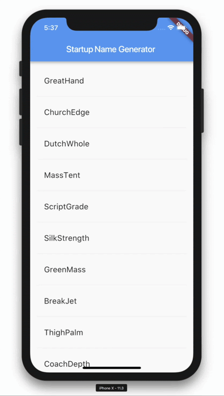
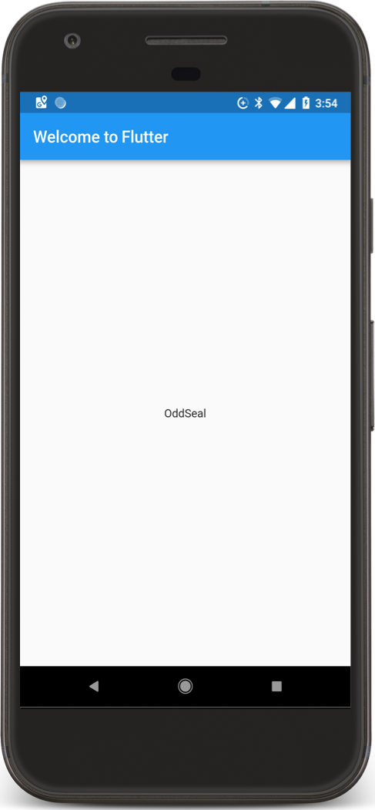
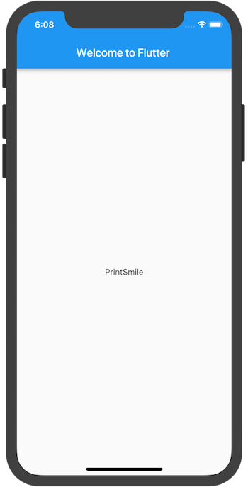
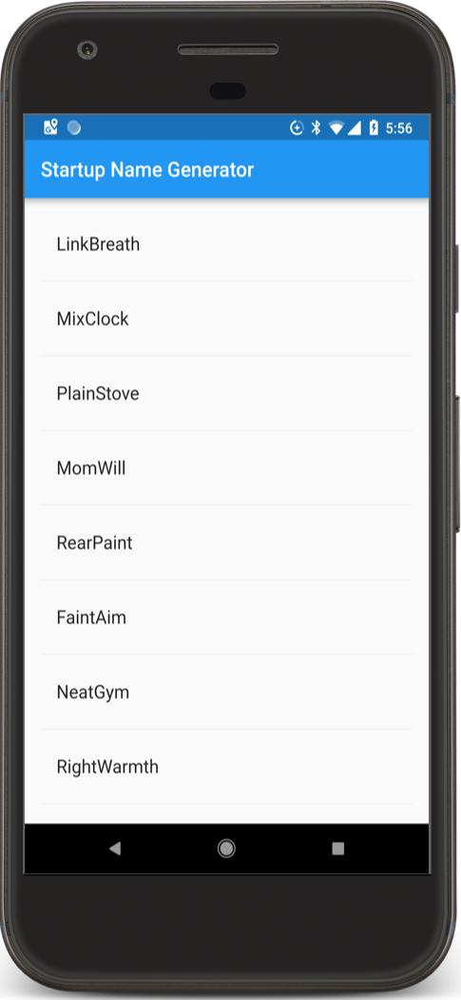
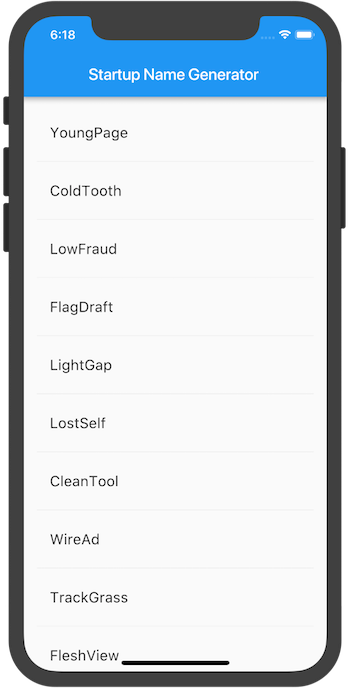
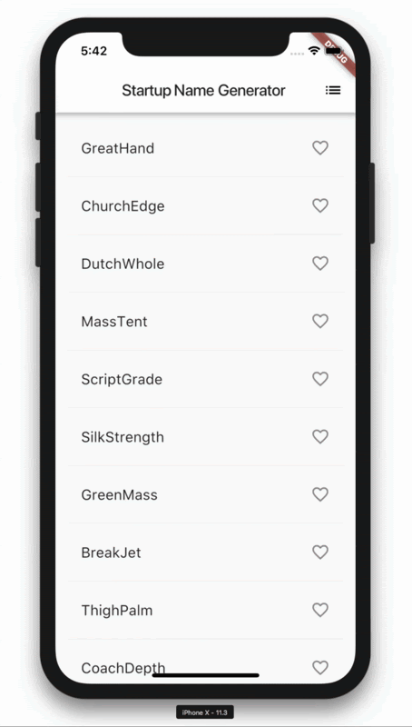

※このコードラボ教材はGoogleのWrite your first Flutter app, part 1 (Last updated Apr 14, 2021) を@ken1_takaが日本語に翻訳したものです。
FlutterはGoogle製の美しい、ネイティブにコンパイルされたアプリケーションを作るためのUIツールキットで、ひとつのコードベースからモバイル、ウェブ、デスクトップのアプリケーションを生成できます。Flutterは世界中のデベロッパーや組織で使われる既存のコードとともに動作し、フリーでオープンソースです。
このコードラボではシンプルなモバイル用のFlutterアプリを作成します。あなたがオブジェクト指向のコードや、変数やループ、条件分岐などの基本的なプログラミングの概念が分かっていればこのコードラボを完成させることができます。Dart、モバイル、ウェブのプログラミング経験はなくても大丈夫です。
パート1で学ぶこと
- iOSやAndroid、ウェブで自然に見えるFlutterアプリを書く方法
- Flutterアプリの基本構造
- 機能を拡張するパッケージを探し、使う方法
- 素早く開発サイクルを回すためのホットリロードの使い方
- 状態を維持するウィジェットを実装する方法
- 限界のない遅延ロードリストの作り方
このコードラボのパート2では、インタラクティブ性の追加、アプリのテーマの変更、新たな画面への遷移（Flutterではルートと呼びます）の機能を追加します。
パート1で作るもの
スタートアップの会社名の提案リストを生成するシンプルなアプリを作成します。ユーザーは名前を選択したり洗濯を解除することができ、ベストなものをひとつ保存できます。コードは一度に10種類の名前を遅延生成します。ユーザーがスクロールすると追加の名前が生成されます。ユーザーがどれだけスクロールしても制限はありません。
次のアニメGIFはこのパートで完成するアプリの動作を示しています。

このコードラボを完了するには2つのソフトウェアが必要です。それはFlutter SDKとエディターです（コードラボではAndroid Studioを使うと仮定して進めますが、エディターはお好みのものを使うことができます。）
このコードラボは下記のデバイスの何れでも実行することができます。
- PCに接続してデベロッパーモードにしてあるAndroidもしくはiOSの実機
- iOSシミュレーター（Xcode toolsのインストールが必要）
- Androidエミュレーター（Android Studioでのセットアップが必要）
- ブラウザー（デバッグにはChromeが必要）
 テンプレート化されたシンプルなFlutterアプリを作成します。startup_namerという名前でFlutterプロジェクトを作成し、以下のようにしてヌルセーフにマイグレートします。
テンプレート化されたシンプルなFlutterアプリを作成します。startup_namerという名前でFlutterプロジェクトを作成し、以下のようにしてヌルセーフにマイグレートします。
$ flutter create startup_namer $ cd startup_namer $ dart migrate --apply-changes
通常はDartのコードがあるlib/main.dartを編集します。
lib/main.dartを置き換えます。lib/main.dartのすべてのコードを一旦削除し、下記のコードで置き換えます。このコードは画面の中心に"Hello World"を表示するものです。
import 'package:flutter/material.dart';
void main() => runApp(MyApp());
class MyApp extends StatelessWidget {
@override
Widget build(BuildContext context) {
return MaterialApp(
title: 'Welcome to Flutter',
home: Scaffold(
appBar: AppBar(
title: const Text('Welcome to Flutter'),
),
body: const Center(
child: const Text('Hello World'),
),
),
);
}
}アプリを実行します。Android, iOS, ウェブへの出力でそれぞれのデバイスに合わせて表示されます。
Android | iOS |
|
|


 注目するところ
注目するところ
- この例ではマテリアルアプリを作成します。マテリアルはモバイルとウェブにおける標準のビジュアルデザイン言語です。
- メインメソッドではアロー（
=>）記法を使用します。アロー記法は1行の関数やメソッドに使います。 - アプリは
StatelessWidgetを拡張し、アプリ自身をウィジェットにします。Flutterではアラインメント、パディング、レイアウトを含むほぼすべてのものがウィジェットです。 - マテリアルライブラリの
Scaffoldウィジェットは標準のアップバー、タイトルとホームスクリーンのウィジェットツリーを保持するボディのプロパティを提供します。ウィジェットのサブツリーはかなり複雑になります - ウィジェットのメインの仕事は他の低レベルのウィジェットに関して ウィジェットのどのように表示するか記述する
buildメソッドを提供することです。 - この例のボディは
Text子ウィジェットを含むCenterウィジェットから成ります。Centerウィジェットはそのウィジェットのサブツリーを画面の中心に揃えます。
このステップでは、english_wordsという名前のオープンソースのパッケージを使っていきます。このパッケージには数千の頻出英単語と便利な機能が含まれています。
english_wordsは他のオープンソースのパッケージと同様にpub.devで見つけることができます。
pubspecファイルはFlutterアプリのアセットを管理します。pubspec.yaml内のdependenciesリストにenglish_words: ^4.0.0（english_wordsの4.0.0もしくはそれ以降のバージョン）を追加します。
dependencies:
flutter:
sdk: flutter
cupertino_icons: ^1.0.2
english_words: ^4.0.0 # この行を追加するAndroid Studioのエディタービューでpubspecを確認したら、Packages getをクリックします。これによりパッケージがプロジェクトに取り込まれます。コンソールには次のように表示されるはずです。
flutter packages get
Running "flutter packages get" in startup_namer...
Process finished with exit code 0dart pub getを実行することでプロジェクトに取り込まれた全パッケージとそのバージョンのリストがpubspec.lockに自動生成されます。
lib/main.dartに1行追加して新しいパッケージをインポートします。
import 'package:flutter/material.dart';
import 'package:english_words/english_words.dart'; // この行を追加するキーボードからの入力に応じてAndroid Studioはインポートするライブラリを提示します。灰色で表示されるものは、そのインポートされたライブラリが（現時点では）未使用であることを示します。
次に、"Hello World"の代わりとなる文字を生成するためにenglish_wordsパッケージを使っていきます。
以下のように修正します。
import 'package:flutter/material.dart';
import 'package:english_words/english_words.dart';
void main() => runApp(MyApp());
class MyApp extends StatelessWidget {
@override
Widget build(BuildContext context) {
final wordPair = WordPair.random(); // この行を追加する
return MaterialApp(
title: 'Welcome to Flutter',
home: Scaffold(
appBar: AppBar(
title: Text('Welcome to Flutter'),
),
body: Center( // constを外し,
//child: Text('Hello World'), // この行を
child: Text(wordPair.asPascalCase), // このように置き換える
),
),
);
}
}アプリが動作中であればホットリロードで動作中のアプリが更新されます。（コマンドラインからはrキーを押すことでリロードできます。）ホットリロードをクリックするかプロジェクトを保存するたびに、異なる単語のペアがランダムに選ばれて表示されるはずです。これはbuildメソッドの中で単語のペアが生成されるためで、buildメソッドはMaterialAppが描画を必要とする際、もしくはFlutter InspectorのPlatformを切り替えた際に実行されます。
Android | iOS |
 |  |
問題がある場合
アプリが正しく動作しない場合はタイプミスがないか確認してください。必要な場合は以下のリンク先のコードを使用して続けることもできます。
ステートレスウィジェットはイミュータブル（変化しない）です。そのプロパティが変更できないことを意味し、全ての値は確定しています。
ステートフル（処理状態を把握する）ウィジェットはウィジェットが生存する間に変化する状態を維持します。ステートフルウィジェットの実装には最低限2つのクラスが必要で、1つはStateクラスのインスタンスを生成するStatefulWidgetです。StatefulWidgetオブジェクトは、それ自身イミュータブルで、破棄され再び生成されるのですが、Stateオブジェクトはウィジェットの生存期間を通して残り続けます。
このステップでは、ステートフルウィジェットであるRandomWordsを追加します。これはそのStateクラスである_RandomWordsStateを生成します。そのあとにRandomWordsを既存のMyApp内の子要素として使用します。
ステートフルウィジェット用のボイラープレート（ひな形）コードを作成します
MyAppの外側であればどこでも良いのですが、ファイルの下の方に置くのが良いでしょう。lib/main.dartのコードの一番下にカーソルを置き、リターンキーを数回押して新しい行から始めます。使用しているIDEでstfulと入力すると、「New Stateful Widget（Statefulウィジェットを作成しますか？）」と聞いてくるのでリターンキーを押して答えます。すると2つのクラスのひな形のコードが作成され、カーソルはステートフルウィジェットの名前を入力する位置に置かれます。
ウィジェットの名前としてRandomWordsを入力します
下記のコードのように、RandomWordsウィジェットはそのStateクラスを生成する以外のことも少し行います。
ステートフルウィジェットの名前としてRandomWordsと入力すると、IDEは自動的に付随するStateクラスを更新します。この場合_RandomWordsStateとなります。デフォルトではStateクラスの名前の先頭にアンダースコアが付加されます。Dart言語ではアンダースコアがついた識別子は内部用途限定となり、Stateオブジェクトにはその慣例があてはめられます。
IDEはstateクラスをState<RandomWords>を継承するように自動的に更新します。これはジェネリックなStateクラスをRandomWordsで指定したものを使っていることを示しています。アプリのロジックのほとんどはここに属し、RandomWordsウィジェットの状態を保持します。このクラスは生成された単語のペアのリストを保存します。そのリストはユーザーがスクロールすることで無限に増えます。そしてこのコードラボのパート2ではリストのハートアイコンを押すことで単語のペアをお気に入りに入れたり外したりすることができるようにします。
それぞれのクラスは次のようになります。
class RandomWords extends StatefulWidget {
@override
_RandomWordsState createState() => _RandomWordsState();
}
class _RandomWordsState extends State<RandomWords> {
@override
Widget build(BuildContext context) {
return Container();
}
}_RandomWordsStateのbuild()メソッドを修正します。
return Container();の部分を下記の2行で置き換えます。
class _RandomWordsState extends State<RandomWords> {
@override
Widget build(BuildContext context) {
final wordPair = WordPair.random(); // 新しい行
return Text(wordPair.asPascalCase); // 新しい行
}
}MyAppの単語を生成するコードを削除し、下記のようにコードを修正します。
class MyApp extends StatelessWidget {
@override
Widget build(BuildContext context) {
final wordPair = WordPair.random(); // この行を削除
return MaterialApp(
title: 'Welcome to Flutter',
home: Scaffold(
appBar: AppBar(
title: Text('Welcome to Flutter'),
),
body: Center(
//child: Text(wordPair.asPascalCase), // この行を...
child: RandomWords(), // ...これで置き換える
),
),
);
}
}アプリをホットリロードします。アプリは前と同じ用に動作し、単語のペアがホットリロードするかアプリを保存する度に表示されます。
問題がある場合
アプリが正しく動作しない場合はタイプミスを確認してください。必要な場合は以下のリンク先のコードを使用して続けることもできます。
このステップでは単語のペアのリストを生成して表示するように_RandomWordsStateを拡張します。ユーザーがスクロールすると、リスト（ListViewウィジェットに表示されている）は無限に増えていきます。ListViewのbuilderファクトリーコンストラクターは必要に応じてリストビューを遅延生成することができるようになっています。
_RandomWordsStateクラスに状態変数を追加します。
単語のペアを保存するための_suggestionsリストを追加します。さらにフォントサイズを大きくするための_biggerFont変数も追加します。
class _RandomWordsState extends State<RandomWords> {
final _suggestions = <WordPair>[]; // 追加する
final _biggerFont = const TextStyle(fontSize: 18); // 追加する
...
}次に、_buildSuggestions()関数を_RandomWordsStateクラスに追加します。このメソッドは単語のペアを表示するListViewを作成します。
ListViewクラスにはitemBuilderというbuilderプロパティがあり、ファクトリービルダーで匿名関数で定義されるコールバック関数です。2つのパラメーター（BuildContextと行のイテレーターであるi）が関数に渡されます。イテレーターは0から始まり、関数が呼び出される度、つまり単語のペアが提示される度に値が増加します。このモデルによりユーザーのスクロール操作に伴い提示リストが増え続けるようにすることができます。
_buildSuggestions関数を追加します。
_RandomWordsStateクラスの中に下記の関数を追加します。コメント部分は消して頂いても構いません。
Widget _buildSuggestions() {
return ListView.builder(
padding: const EdgeInsets.all(16),
// itemBuilderコールバックは単語のペアが提示される度に呼び出され
// それぞれListTitle行に配置する。偶数行では、関数はListTitle行を
// その単語のペアのために追加する。奇数行では、関数は各行を
// 見た目上区別しやすくするための仕切りとなるウィジェットを追加する。
// 小さなデバイスでは仕切りは見にくくなるかもしれないことに留意する。
itemBuilder: (BuildContext _context, int i) {
// ListViewの各行に1ピクセル以上の仕切りのウィジェットを追加する
if (i.isOdd) {
return Divider();
}
// "i ~/ 2"はiを2で割った結果を整数の値として返す。
// 例として1, 2, 3, 4, 5は0, 1, 1, 2, 2となる。
// これはListView内の仕切りウィジェットの数を引いたもので
// 実際の単語のペアの数を求める。
final int index = i ~/ 2;
// 提供済みの単語のペア群の終わりに到達した時は...
if (index >= _suggestions.length) {
// ...さらに10件を生成し、suggestionsリストに追加する
_suggestions.addAll(generateWordPairs().take(10));
}
return _buildRow(_suggestions[index]);
}
);
}_buildSuggestions関数は_buildRowを単語のペアごとに呼び出します。この関数は新たなペアをListTitleに表示します。パート2でより良くすることができるようにしておくためです。
_buildRow関数を_RowndomWordsStateに追加します。
Widget _buildRow(WordPair pair) {
return ListTitle(
title: Text(
pair.asPascalCase,
style: _biggerFont,
),
);
}_RandomWordsStateのbuildメソッドを修正します。
直接単語生成ライブラリを呼び出すのではなく、_buildSuggestions()を使用するように変更します。（Scaffoldは基本的なマテリアルデザインの見た目のレイアウトを実装します。）
@override
Widget build(BuildContext context) {
//final wordPair = WordPair.random(); // この行を削除する
//return Text(wordPair.asPascalCase); // この行を削除する
return Scaffold ( // この行から...
appBar: AppBar(
title: Text('Startup Name Generator'),
),
body: _buildSuggestions(),
); // ...この行までを追加する
}
titleを変更し、AppBarを削除して、homeプロパティをRandomWordsウィジェットにするようMyAppのbuildメソッドを修正します。
@override
Widget build(BuildContext context) {
return MaterialApp(
title: 'Startup Name Generator',
home: RandomWords(),
);
}アプリを再起動します。どんなにスクロールしていっても単語のペアのリストが出てくるはずです。
|
|
 |  |
問題がある場合
アプリが正しく動作しない場合はタイプミスを確認してください。必要な場合は以下のリンク先のコードを使用して続けることもできます。
おめでとうございます！
パート1を完成することができました！
このアプリを拡張したいという方はパート2に進んでください。パート2では以下のような変更をします。
- インタラクティブ性の追加
- 新しい画面遷移の追加
- テーマカラーの変更
パート2を終えるとアプリはこのようになります。

次のステップは他にもあります
Flutter SDKについてさらに学ぶには下記のリンク先を見てみると良いでしょう。
- Layouts in Flutter
- Add interactivity tutorial
- Introduction to widgets
- Flutter for Android developers
- Flutter for React Native developers
- Flutter for web developers
- Flutter YouTube channel
他にもあります。